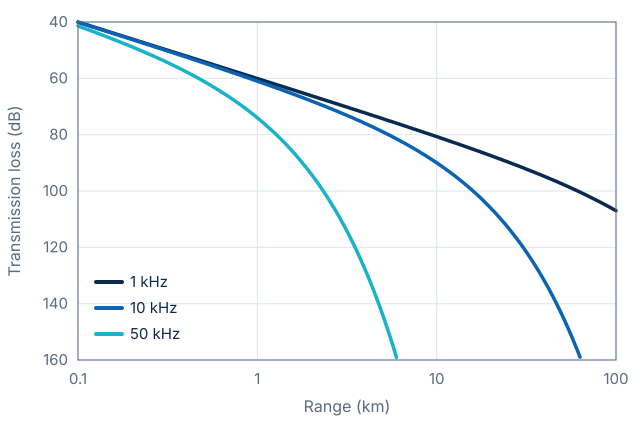
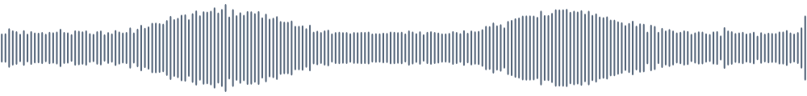
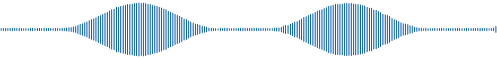

A one-line subtitle that says what the audience will learn
Why we listen to the ocean instead of looking at it
Motivation
Background

From four hydrophones to a list of detected calls
Method
Method
Detection quality, numbers that matter, and what it sounds like
Results
| Method | Hydrophones | Precision | Recall | F1 | Latency |
|---|---|---|---|---|---|
| Energy detector | 1 | 0.62 | 0.71 | 0.66 | 5 ms |
| CNN, single channel | 1 | 0.84 | 0.80 | 0.82 | 35 ms |
| Beamforming + CNN (ours) | 4 | 0.93 | 0.89 | 0.91 | 40 ms |
Note: replace these values with your own results. The highlighted row uses the class ours.
Results
Results


Summary